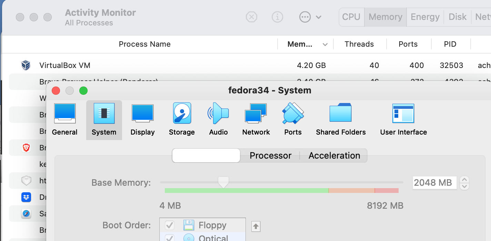

Table of Contents
1 はじめに
Virtual Memory (VM)が実際に使用するメモリ量は、割り当てたメモリ量よりも少ないので、VMWare ESXi等ではVMへのメモリのオーバープロビジョニング(実際のメモリ量以上に割り当てること)をすることがよくあるそうです。実際にどの程度、メモリがVMに使われているのかをMacBook (macOS Big Sur)上で確認したところ、とんでもないことに気が付いてしまいました。
2 VMが倍のメモリを使っている!?
うちのMacBook ProはLate 2013のお年寄りでメモリは8GBしか積んでいませんので、VM(Fedora34)には2GBしかメモリを割り当てていません。しかし、Activity Monitorで見たところ、なんと倍の4GBもメモリを消費していることがわかりました。

これは困ります。オーバープロビジョニングどころの話ではありません。
3 macOSの問題でした
まずはVirtualBoxの問題かと思い、ネットで検索したところ見つけました。
同じ問題に遭遇している人たちがたくさんいるようです。このバグレポートを下まで見てみると、VirtualBoxだけでなくDockerでも起きているとのこと。DockerチームからAppleにバグ番号48714544でレポート済みだそうです。macOS側の問題のようですね。
Parallelsでも同様の問題が報告されていました。
VirtualBox 6.1.2に戻せば、このメモリ倍使用の問題は回避できるそうですが、Big Surは古いVirtualBoxをブロックしてしまうため、この回避策は使えません。うーむ、はまりです。
上のバグチケットがオープンされたのが19ヶ月前、最後の書き込みが2ヶ月前なので、1年半以上に渡ってAppleはこの問題を放置しているようです。安定性が重要なサーバー用途にmacが使えるようになることは永遠に無いように感じます。
しかし、長期化しているOSの問題ならそれはそれで、VirtualBox側でも対応して欲しいです。特に、古いバージョンに戻せば回避できる問題なので、やり方はあるはず。
この問題に関する日本語のページもいくつか見つけました
- https://ytooyama.hatenadiary.jp/entry/2020/06/11/183746
- https://qiita.com/hirohero/items/1e40c237768fbe1b3395
バグの影響度を考えると、もっと騒がれてもいいような気がしますが、MacでVMやらコンテナを使う人は少ないということでしょうか。
4 終わりに
MacとPythonの相性があまり良くなく、macOSをアップグレードするたびにPythonが動かなくなったりするので、私はMacBookにVirtualBoxをインストールして、Linux VMを日常的につかっていましたが、倍のメモリが使われていることはこれまで気が付きませんでした。
普段使うPCに、本当に必要なメモリ量は意外と少ないのかもしれませんね。ただ、いくつかLinux VMを立ち上げてVM同士でクラスターを構成する(eg, ceph)ような実験はmac上では厳しくなりました。